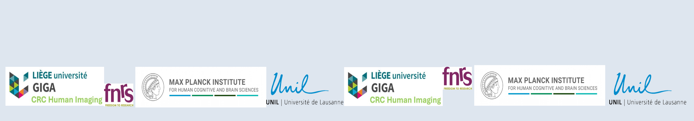
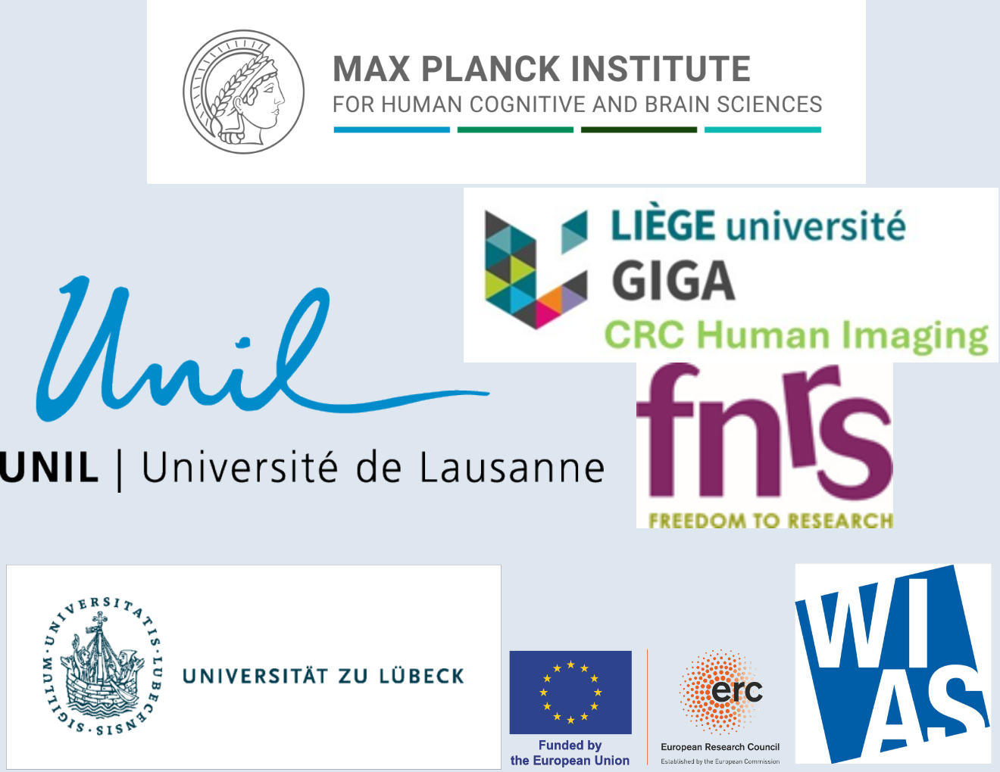

About the Workshop
Welcome to the hMRI Workshop (June 12, 2026), which will take place as part of
Hackathon 2026
(June 11–13, 2026) before
OHBM 2026 (June 14–18, 2026)!
The workshop provides an introduction to quantitative MRI through the hMRI-toolbox.
Registration and Venue
Registration:
The registration will be via the website
Hackathon2026, please check the website for updates regularly!
Venue:
Hackathon2026 (June 11–13, 2026),
University of Bordeaux – Victoire Campus
3ter Pl. de la Victoire, 33000 Bordeaux, France.
Speakers

- Baris E. Ugurcan (Max Planck Institute for Human Cognitive and Brain Sciences, Leipzig, Germany)
- Christophe Phillips (University of Liege, Liege, Belgium)
- Antoine Lutti (University Lausanne, Lausanne, Switzerland)
- Ferath Kherif (Laboratoire de Recherche en Neuroimagerie (LREN). Dpt Clinical neuroscience. CHUV, Switzerland)
Talks
The talks will cover a range of topics relevant to the use of MRI relaxometry data in neuroscience studies. These include:
- Introduction to MRI relaxometry
- Practical guide to the computation, processing and analysis of relaxometry data with the hMRI toolbox
- Description of the advanced toolbox features
- Applications
Schedule
Session 1
| Time |
Topic |
Speaker |
| 13:30–13:55 |
MRI relaxometry - motivations and introduction |
Antoine Lutti |
| 13:55–14:20 |
Computating relaxometry maps with the hMRI toolbox |
Antoine Lutti |
| 14:20–14:45 |
Advanced tools for the computation of MRI relaxometry maps |
Antoine Lutti |
| 14:45–15:10 |
Open discussion & Coffee break |
|
| 15:10–15:35 |
Advanced computational tools: denoising module |
Baris E. Ugurcan |
| 15:35–16:00 |
Specific consideration for the spatial processing of quantative MRI maps |
Christophe Phillips |
Session 2
| Time |
Topic |
Speaker |
| 17:30–17:55 |
Adressing motion degradation in analyses of relaxometry data |
Antoine Lutti |
| 17:55–18:20 |
Specific consideration for the statistical analysis of quantative MRI maps |
Ferath Kherif |
| 18:20–19:00 |
Q&A and Closing |
|
Workshop Materials
Links to resources:
About the toolbox
Development Team:
The development of the hMRI‑toolbox is an international collaborative effort including the following developers and sites:
- Baris E. Ugurcan, Tobias Leutritz, Enrico Reimer, Nikolaus Weiskopf (Max Planck Institute for Human Cognitive and Brain Sciences, Leipzig, Germany)
- Luke J. Edwards (Cognitive Neuroscience, Faculty of Psychology and Neuroscience, Maastricht University, Maastricht, The Netherlands/Department of Neurophysics, Max Planck Institute for Human Cognitive and Brain Sciences, Leipzig, Germany)
- Evelyne Balteau, Christophe Phillips (University of Liege, Liege, Belgium)
- Siawoosh Mohammadi (Medical Center Hamburg-Eppendorf, Hamburg, Germany)
- Martina F. Callaghan, John Ashburner (University College London, London, United Kingdom)
- Karsten Tabelow (Weierstrass Institute for Applied Analysis and Stochastics, Berlin, Germany)
- Bogdan Draganski, Ferath Kerif, Antoine Lutti (LREN, DNC - CHUV, University Lausanne, Lausanne, Switzerland)
- Maryam Seif (University of Zurich, Zurich, Switzerland)
- Gunther Helms (Department of Medical Radiation Physics, Lund University, Lund, Sweden)
- Lars Ruthotto (Emory University, Atlanta, GA, United States)
- Gabriel Ziegler (Otto-von-Guericke-University Magdeburg, Magdeburg, Germany)
Acknowledgements:
- E.B. received funding from the European Structural and Investment Fund / European Regional Development Fund & the Belgian Walloon Government, project BIOMED-HUB (programme 2014-2020).
- N.W. received funding from the European Research Council under the European Union's Seventh Framework Programme (FP7/2007-2013) / ERC grant agreement No 616905. This project has received funding from the European Union's Horizon 2020 research and innovation programme under the grant agreement No 681094, and is supported by the Swiss State Secretariat for Education, Research and Innovation (SERI) under contract number 15.0137.
- S.M. received funding from the European Union's Horizon 2020 research and innovation programme under the Marie Sklodowska-Curie grant agreement No 658589.
- N.W. and S.M. received funding from the BMBF (01EW1711A and B) in the framework of ERA-NET NEURON.
- S.M. has received funding from the European Union by ERC grant (Acronym: MRStain, Grant agreement ID: 101089218, DOI: 10.3030/101089218). Views and opinions expressed are, however, those of the author(s) only and do not necessarily reflect those of the European Union or the European Research Council Executive Agency. Neither the European Union nor the granting authority can be held responsible for them.
- S.M. supported by the German Research Foundation (DFG Priority Program 2041 “Computational Connectomics”, [MO 2397/5-1, MO 2397/5-2], by the Emmy Noether Stipend: MO 2397/4-1; MO 2397/4-2).
- B.D. is supported by the Swiss National Science Foundation (project grant no. 213595, 32003B_135679, 32003B_159780, 324730_192755 and CRSK-3_190185), InnoSuisse Flagship Swiss brAInHealth project, ERA_NET NEURON JTC2020: iSEE and JTC2023-ELSA: BrainTree projects.
- M.F.C.'s research was funded in whole or in part by the Discovery Research Platform for Naturalistic Neuroimaging funded by the Wellcome [226793/Z/22/Z].
- A.L. is supported by the Swiss National Science Foundation (project grant Nr CR00I5-235940).
- The Wellcome Centre for Human Neuroimaging is supported by core funding from the Wellcome [203147/Z/16/Z].
- C.P. is supported by the F.R.S.-FNRS, Belgium.
- The hMRI-toolbox project is supported by the Max Planck Society.
